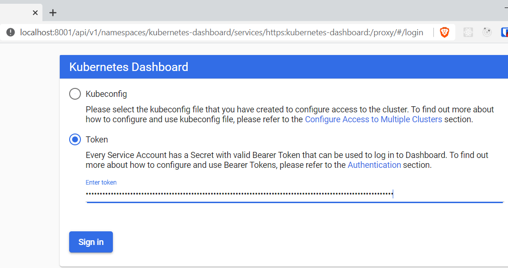
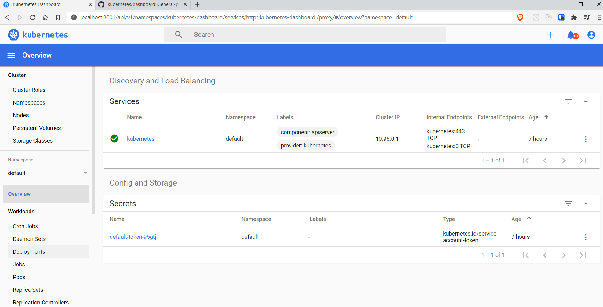
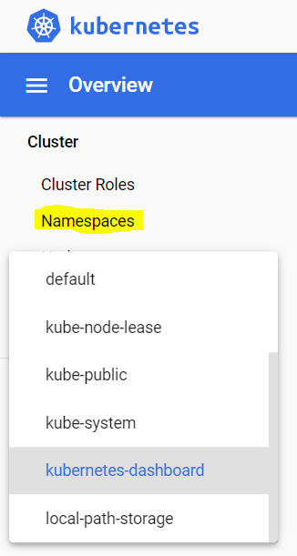

k8s on Windows Devbox
Posted on January 01, 2099 in Develop
I want to install OpenFaaS again.
This time running on Kubernetes (k8s), Docker Desktop, Windows Home 10 with Virtual Machine Platform on WSL2.
Running Docker Desktop with WSL2 backend has many improvements over alternatives.
Last time I installed Docker (in this blog), I was running on Docker Swarm, Docker CE, Windows Pro 10 and Hyper-V.
@alexellisuk has build yet a great tool. One being Arkade.
It is great for installing lots of K8s goodies both locally and in cloud. I also includes OpenFaaS.
Arkade
Your one-stop CLI for Kubernetes
Install on devbox on Windows
Prerequisites.
You need Docker. Start by typing
docker -v
to see if you already have it installed.
If not then follow this tutorial to get it.
In that blog I ended up with Docker Desktop on Windows Home 10 with Virtual Machine Platform incl. WSL2.
K8S
Now that we have Docker, then it is time to play with Arkade to install k8s and other stuff
But there are other options than Arkade to install k8s? * On localhost * Using Kind * Installing Kubernetes with Kind * kind Quick Start * Using k3d - for dev, Raspberry Pi or IoT * Using Minikube - for dev * Install Minikube * Installing Kubernetes with Minikube * Enable k8s in Docker Desktop - for dev * OpenShift * In cloud * All cloud providers have their own k8s services [EKS (AWS), AKS (Az), GKE (Google)] * Using RKE
So why use Arkade to install k8s?
* If you only need a single node cluster then option 3 - using Docker Desktop automates the work you manually can do with Minikube.
If you need a multi node cluster then option 0 - using Arkade automates the work you manually can do with Kind.
Arkade also automates the work you need to do with other k8s related tools.
Already have a k8s cluster?
k8s install is only the top of the iceberg of Arkade.
If you already have a k8s cluster then Arkade kicks in by installing lost of
* k8s apps from e.g. Helm Hub (with ark install) and/or
* CLIs for k8s or apps (with ark get)
Arkade then unifies fetching packages across platforms. Before:
* apt-get on some Linux versions
* yum on some other Linux versions
* choco on Windows
* brew on Mac
Under the hood Arkade simplifies commands by using Helm as the k8s package manager and kubectl commands.
Install Arkade
# Check that curl is installed
curl --version
# curl 7.67.0 (x86_64-w64-mingw32) libcurl/7.67.0 OpenSSL/1.1.1d (Schannel) zlib/1.2.11 libidn2/2.3.0 nghttp2/1.39.2
# Release-Date: 2019-11-06
# Protocols: dict file ftp ftps gopher http https imap imaps ldap ldaps pop3 pop3s rtsp smtp smtps telnet tftp
# Features: AsynchDNS HTTP2 HTTPS-proxy IDN IPv6 Kerberos Largefile libz Metalink MultiSSL NTLM SPNEGO SSL SSPI TLS-SRP
# Check that docker is installed
docker -v
# Docker version 19.03.12, build 48a66213fe
# Check that a k8s cluster is not yet installed
kubectl version
# Client Version: version.Info{Major:"1", Minor:"16+", GitVersion:"v1.16.6-beta.0", GitCommit:"e7f962ba86f4ce7033828210ca3556393c377bcc", GitTreeState:"clean", BuildDate:"2020-01-15T08:26:26Z", GoVersion:"go1.13.5", Compiler:"gc", Platform:"windows/amd64"}
# Unable to connect to the server: dial tcp [::1]:8080: connectex: No connection could be made because the target machine actively refused it.
# Check that arkade is not installed
arkade --help
# bash: arkade: command not found
# Install Arkade on Windows
# https://github.com/alexellis/arkade#get-arkade
curl -sLS https://dl.get-arkade.dev | sh
# Downloading package https://github.com/alexellis/arkade/releases/download/0.6.12/arkade.exe as //arkade.exe
# curl: (23) Failed writing body (0 != 16360)
# Trying as-admin
curl -sLS https://dl.get-arkade.dev | sh
# Downloading package https://github.com/alexellis/arkade/releases/download/0.6.12/arkade.exe as //arkade.exe
# chmod: cannot access '//arkade.exe': No such file or directory
# Download complete.
# Running with sufficient permissions to attempt to move arkade to /c/Users/Soren/bin
# mv: cannot stat '//arkade.exe': No such file or directory
# ln: failed to create symbolic link '/c/Users/Soren/bin/ark': No such file or directory
# Creating alias 'ark' for 'arkade'.
# main: line 172: arkade: command not found
Both attemps failed - instead get manual recipe: get.sh
1. Open your web browser and go to https://github.com/alexellis/arkade/releases
2. Download the latest release for windows to C:\Users\yourusername.arkade\bin\arkade`
3. Add path to environment
setx PATH "%path%;C:\Users\yourusername\.arkade\bin"
- Create a symbolic link
export ALIAS_NAME="ark"
export REPO=arkade
export BINLOCATION="/c/users/yourusername/.arkade/bin"
chmod +x "$BINLOCATION/$REPO"
ln -sf "$BINLOCATION/$REPO" "$BINLOCATION/$ALIAS_NAME"
arkade version
# _ _
# __ _ _ __| | ____ _ __| | ___
# / _` | '__| |/ / _` |/ _` |/ _ \
# | (_| | | | < (_| | (_| | __/
# \__,_|_| |_|\_\__,_|\__,_|\___|
# Get Kubernetes apps the easy way
# Version: 0.6.12
# Git Commit: 0415b5fa9d0a6740feb3d9093b7555d38c7e1a51
ark get --help
# The get command downloads a CLI or application from the specific tool's releases or downloads page.
# The tool is usually downloaded in binary format and provides a fast and easy alternative to a package manager.
# Usage:
# arkade get [flags]
# Examples:
# arkade get helm
# arkade get linkerd2 --stash=false
# See which CLIs arkade can install:
ark get
# Use "arkade get TOOL" to download a tool or application:
# faas-cli
# helm
# kubectl
# kubectx
# kind
# k3d
# k3sup
# kubeseal
# inletsctl
# osm
# linkerd2
# kubebuilder
# kustomize
# doctl
# k9s
# civo
# terraform
Install k8s cluster
arkade get kubectl
# Downloading kubectl
# https://storage.googleapis.com/kubernetes-release/release/v1.18.0/bin/windows/amd64/kubectl.exe
# Tool written to: C:\Users\yourusername/.arkade/bin/kubectl.exe
# We will use kind to create a k8s cluster, but first install it:
arkade get kind
# Downloading kind
# https://github.com/kubernetes-sigs/kind/releases/download/v0.9.0/kind-windows-amd64
# Tool written to: C:\Users\yourusername/.arkade/bin/kind.exe
kind version
# kind v0.9.0 go1.15.2 windows/amd64
# Crate a k8s cluster:
kind create cluster
# Creating cluster "kind" ...
# • Ensuring node image (kindest/node:v1.19.1) 🖼 ...
# ✓ Ensuring node image (kindest/node:v1.19.1) 🖼
# • Preparing nodes 📦 ...
# ✓ Preparing nodes 📦
# • Writing configuration 📜 ...
# ✓ Writing configuration 📜
# • Starting control-plane 🕹️ ...
# ✓ Starting control-plane 🕹️
# • Installing CNI 🔌 ...
# ✓ Installing CNI 🔌
# • Installing StorageClass 💾 ...
# ✓ Installing StorageClass 💾
# Set kubectl context to "kind-kind"
# You can now use your cluster with:
kubectl cluster-info --context kind-kind
# Kubernetes master is running at https://127.0.0.1:52295
# KubeDNS is running at https://127.0.0.1:52295/api/v1/namespaces/kube-system/services/kube-dns:dns/proxy
# To further debug and diagnose cluster problems, use 'kubectl cluster-info dump'.
# And what is the name of cluster?
kind get clusters
# kind
# If you need to delete your cluster:
# kind delete cluster
# kind delete cluster --name kind
# Seems like I have a client version from docker and a server version is in the cluster with the version installed by arkade.
kubectl version
# Client Version: version.Info{Major:"1", Minor:"16+", GitVersion:"v1.16.6-beta.0", GitCommit:"e7f962ba86f4ce7033828210ca3556393c377bcc", GitTreeState:"clean", BuildDate:"2020-01-15T08:26:26Z", GoVersion:"go1.13.5", Compiler:"gc", Platform:"windows/amd64"}
# Server Version: version.Info{Major:"1", Minor:"19", GitVersion:"v1.19.1", GitCommit:"206bcadf021e76c27513500ca24182692aabd17e", GitTreeState:"clean", BuildDate:"2020-09-14T07:30:52Z", GoVersion:"go1.15", Compiler:"gc", Platform:"linux/amd64"}
# Check cluster location and credentials that kubectl knows about:
kubectl config view
# apiVersion: v1
# clusters:
# - cluster:
# certificate-authority-data: DATA+OMITTED
# server: https://127.0.0.1:52295
# name: kind-kind
# contexts:
# - context:
# cluster: kind-kind
# user: kind-kind
# name: kind-kind
# current-context: kind-kind
# kind: Config
# preferences: {}
# users:
# - name: kind-kind
# user:
# client-certificate-data: REDACTED
# client-key-data: REDACTED
kubectl get nodes
# NAME STATUS ROLES AGE VERSION
# kind-control-plane Ready master 18m v1.19.1
kubectl get pods
# No resources found in default namespace.
The cluster config seen in kubectl config view is stored in C:\Users\youruserid.kube\config
So now having a master node running and no pod what is next?
* We could add worker nodes to the cluster
* We could install apps
Issues: * Booting Windows made bash unable to access cluster. Why? * It was not an envir var problem, since after delete + create cluster then no new envir vars were created * In vid Walk-through of arkade - for Kubernetes, Alex think boot persistence has been implemented - and before we had to recreate cluster after boot. * Tips about accessing clusters: Accessing Clusters
Install k8s apps
Arkade makes it easy to install many ready-to-use apps. You can print the list it contains:
# Check which apps arkade lets you easily install:
ark install --help
# Install Kubernetes apps from helm charts or YAML files using the "install" command.
# You can also find the post-install message for each app with the "info" command.
# Usage:
# arkade install [flags]
# arkade install [command]
# Examples:
# arkade install
# arkade install openfaas --gateways=2
# arkade install inlets-operator --token-file $HOME/do-token
# Available Commands:
# argocd Install argocd
# cert-manager Install cert-manager
# chart Install the specified helm chart
# cron-connector Install cron-connector for OpenFaaS
# crossplane Install Crossplane
# docker-registry Install a Docker registry
# docker-registry-ingress Install registry ingress with TLS
# gitea Install gitea
# grafana Install grafana
# info Find info about a Kubernetes app
# ingress-nginx Install ingress-nginx
# inlets-operator Install inlets-operator
# istio Install istio
# jenkins Install jenkins
# kafka-connector Install kafka-connector for OpenFaaS
# kube-image-prefetch Install kube-image-prefetch
# kube-state-metrics Install kube-state-metrics
# kubernetes-dashboard Install kubernetes-dashboard
# linkerd Install linkerd
# loki Install Loki for monitoring and tracing
# metrics-server Install metrics-server
# minio Install minio
# mongodb Install mongodb
# nats-connector Install OpenFaaS connector for NATS
# nfs-client-provisioner Install nfs client provisioner
# openfaas Install openfaas
# openfaas-ingress Install openfaas ingress with TLS
# openfaas-loki Install Loki-OpenFaaS and Configure Loki logs provider for OpenFaaS
# osm Install osm
# portainer Install portainer to visualise and manage containers
# postgresql Install postgresql
# redis Install redis
# registry-creds Install registry-creds
# tekton Install Tekton pipelines and dashboard
# traefik2 Install traefik2
# Flags:
# -h, --help help for install
# --kubeconfig string Local path for your kubeconfig file (default "kubeconfig")
# --wait If we should wait for the resource to be ready before returning (helm3 only, default false)
Install k8s app kubernetes-dashboard
arkade install kubernetes-dashboard
# Using kubeconfig: C:\Users\youruserid/.kube/config
# Node architecture: "amd64"
# # To create the Service Account and the ClusterRoleBinding
# # @See https://github.com/kubernetes/dashboard/blob/master/docs/user/access-control/creating-sample-user.md#creating-sample-user
cat <<EOF | kubectl apply -f -
---
apiVersion: v1
kind: ServiceAccount
metadata:
name: admin-user
namespace: kubernetes-dashboard
---
apiVersion: rbac.authorization.k8s.io/v1
kind: ClusterRoleBinding
metadata:
name: admin-user
roleRef:
apiGroup: rbac.authorization.k8s.io
kind: ClusterRole
name: cluster-admin
subjects:
- kind: ServiceAccount
name: admin-user
namespace: kubernetes-dashboard
---
EOF
# #To get your Token for logging in
kubectl -n kubernetes-dashboard describe secret $(kubectl -n kubernetes-dashboard get secret | grep admin-user-token | awk '{print $1}')
# Shown last part of the output
# Name: admin-user-token-8ltkm
# Namespace: kubernetes-dashboard
# Labels: <none>
# Annotations: kubernetes.io/service-account.name: admin-user
# kubernetes.io/service-account.uid: cf8c00d4-e353-46cd-a60f-52b976278a5c
# Type: kubernetes.io/service-account-token
# Data
# ====
# ca.crt: 1066 bytes
# namespace: 20 bytes
# token: eyJhbGciOiJSUzI1NiIsImtpZCI6InBXbUdUMG01cHU1b21mWl9HQ2hvckpnc2piTE8xZFhraE16Qnl6b0FUYWsifQ.eyJpc3MiOiJrdWJlcm5ldGVzL3NlcnZpY2VhY2NvdW50Iiwia3ViZXJuZXRlcy5pby9zZXJ2aWNlYWNjb3VudC9uYW1lc3BhY2UiOiJrdWJlcm5ldGVzLWRhc2hib2FyZCIsImt1YmVybmV0ZXMuaW8vc2VydmljZWFjY291bnQvc2VjcmV0Lm5hbWUiOiJhZG1pbi11c2VyLXRva2VuLThsdGttIiwia3ViZXJuZXRlcy5pby9zZXJ2aWNlYWNjb3VudC9zZXJ2aWNlLWFjY291bnQubmFtZSI6ImFkbWluLXVzZXIiLCJrdWJlcm5ldGVzLmlvL3NlcnZpY2VhY2NvdW50L3NlcnZpY2UtYWNjb3VudC51aWQiOiJjZjhjMDBkNC1lMzUzLTQ2Y2QtYTYwZi01MmI5NzYyNzhhNWMiLCJzdWIiOiJzeXN0ZW06c2VydmljZWFjY291bnQ6a3ViZXJuZXRlcy1kYXNoYm9hcmQ6YWRtaW4tdXNlciJ9.HOkirmDW_KEpNcH_W2kotH5V_r_MgxzMiZnYctyP2bdCt7yBZijfwVK6rv3SuYizZM5FuxWsHARR8aFmsIG5wtL4Pv1mS0wHggt1Tt3rX-8Du2kj0UZwjM6pKZ5zECSC-JM1fItUAjsZyad2qxAThPaYtaJw2HVbJHdrQxn7I65kZY9qNGTPevwVrfs8PeUnpeUqlmaeZ9doob0x1zB_3TKvvST9r38m9nsRblfQU2P9QY82Q4qU74sV3lwE5cRs0XuviyQBEvfGxH5od7ahTXea5B5zHA-3_7SSyvLWHvjMMk4fn8_ZWwxJKFYc1zbxL2JqNvqzvvqRqsfbwOjX8g
# #To forward the dashboard to your local machine
kubectl proxy
# Starting to serve on 127.0.0.1:8001
# # Once Proxying you can navigate to the below
# http://localhost:8001/api/v1/namespaces/kubernetes-dashboard/services/https:kubernetes-dashboard:/proxy/#/login
# Paste the token above into the Dashboard login screen

When logged in:

There are several k8s namespaces. Select some to see what they are comprised of:

Issues:
* Default user has too little permissions, if you forget to paste the cat << EOF block.
* Create An Authentication Token (RBAC)
* Read about Access control
More info: * Other apis exposed though local proxy * Web UI (Dashboard) * Github: kubernetes/dashboard
Install k8s app metrics-server (- and heml)
Apparently installing metrics-server does also do arkade get helm, when it is not yet installed.
Helm is a package manager for k8s apps (packaged in helm charts).
arkade install metrics-server
# Using kubeconfig: C:\Users\youruserid/.kube/config
# Node architecture: "amd64"
# Client: "x86_64", "MINGW64_NT-10.0-19041"
# 2020/09/22 12:41:45 User dir established as: C:\Users\youruserid/.arkade/
# https://get.helm.sh/helm-v3.2.4-windows-amd64.zip
# C:\Users\Soren\AppData\Local\Temp/windows-amd64
# C:\Users\Soren\AppData\Local\Temp/helm.exe
# C:\Users\Soren\AppData\Local\Temp/README.md
# C:\Users\Soren\AppData\Local\Temp/LICENSE
# 2020/09/22 12:42:19 extracted zip into C:\Users\youruserid\AppData\Local\Temp: 4 files, 0 dirs (991.479ms)
# Downloaded to: C:\Users\youruserid/.arkade/bin/helm.exe helm.exe
# Error: no repositories found. You must add one before updating
# Error: exit code 1
helm version
# version.BuildInfo{Version:"v3.2.4", GitCommit:"0ad800ef43d3b826f31a5ad8dfbb4fe05d143688", GitTreeState:"clean", GoVersion:"go1.13.12"}
So what's with Error: no repositories found?
Getting Started with Helm v3
# Verify repo (list of helm charts) is missing
helm repo update
# Error: no repositories found. You must add one before updating
# get stable repo - this can take 10s of minutes without output in the shell...
helm repo add stable https://kubernetes-charts.storage.googleapis.com/
# "stable" has been added to your repositories
On https://helm.sh/docs/intro/quickstart/ in the version dropdown you will see which version of Helm is the latest stable version, which was installed above.
Having the helm chart list downloaded we try again:
arkade install metrics-server
# Using kubeconfig: C:\Users\youruserid/.kube/config
# Node architecture: "amd64"
# Client: "x86_64", "MINGW64_NT-10.0-19041"
# 2020/09/24 17:27:20 User dir established as: C:\Users\youruserid/.arkade/
# https://get.helm.sh/helm-v3.2.4-windows-amd64.zip
# C:\Users\youruserid\AppData\Local\Temp/windows-amd64
# C:\Users\youruserid\AppData\Local\Temp/helm.exe
# C:\Users\youruserid\AppData\Local\Temp/README.md
# C:\Users\youruserid\AppData\Local\Temp/LICENSE
# 2020/09/24 17:27:22 extracted zip into C:\Users\youruserid\AppData\Local\Temp: 4 files, 0 dirs (406.024ms)
# Downloaded to: C:\Users\youruserid/.arkade/bin/helm.exe helm.exe
# Hang tight while we grab the latest from your chart repositories...
# ...Successfully got an update from the "stable" chart repository
# Update Complete. ⎈ Happy Helming!⎈
# Chart path: C:\Users\youruserid\AppData\Local\Temp/charts
# VALUES values.yaml
# Command: C:\Users\youruserid/.arkade/bin/helm [upgrade --install metrics-server stable/metrics-server --namespace kube-system --values C:\Users\youruserid\AppData\Local\Temp/charts/metrics-server/values.yaml --set args={--kubelet-insecure-tls,--kubelet-preferred-address-types=InternalIP\,ExternalIP\,Hostname}]
# Release "metrics-server" does not exist. Installing it now.
# NAME: metrics-server
# LAST DEPLOYED: Thu Sep 24 17:27:29 2020
# NAMESPACE: kube-system
# STATUS: deployed
# REVISION: 1
# NOTES:
# The metric server has been deployed.
# In a few minutes you should be able to list metrics using the following
# command:
# kubectl get --raw "/apis/metrics.k8s.io/v1beta1/nodes"
# =======================================================================
# = metrics-server has been installed. =
# =======================================================================
# # It can take a few minutes for the metrics-server to collect data
# # from the cluster. Try these commands and wait a few moments if
# # no data is showing.
# # Check pod usage
# kubectl top pod
# # Check node usage
kubectl top node
# Error from server (ServiceUnavailable): the server is currently unable to handle the request (get nodes.metrics.k8s.io)
# # Find out more at:
# # https://github.com/helm/charts/tree/master/stable/metrics-server
# Thanks for using arkade!
So now we have Error from server (ServiceUnavailable).
Try fix: issue 448.
# Is pod running?
kubectl get pods -n kube-system
# NAME READY STATUS RESTARTS AGE
# metrics-server-56c4ff648b-jdzv6 1/1 Running 0 53m
# Is service running?
kubectl get svc -n kube-system
# NAME TYPE CLUSTER-IP EXTERNAL-IP PORT(S) AGE
# metrics-server ClusterIP 10.106.132.12 <none> 443/TCP 55m
# Can we ping?
ping 10.106.132.12
# Pinging 10.106.132.12 with 32 bytes of data:
# Request timed out.
# Nope!
3 days later
kubectl top node
# NAME CPU(cores) CPU% MEMORY(bytes) MEMORY%
# kind-control-plane 473m 5% 952Mi 8%
kubectl top pod
kubectl get --raw "/apis/metrics.k8s.io/v1beta1/nodes"
# Error from server (NotFound): the server could not find the requested resource
Start proxy in another terminal
kubectl proxy
Then open browser http://127.0.0.1:8001/
{
"paths": [
"/apis/metrics.k8s.io",
"/apis/metrics.k8s.io/v1beta1",
http://127.0.0.1:8001/apis/metrics.k8s.io/v1beta1/nodes gives "ERR_CONNECTION_REFUSED"
More info: * Metrics Server: * helm/charts - metrics-server * Github: kubernetes-sigs/metrics-server * k8s Debug: Resource metrics pipeline * Helm: * Quickstart Guide * Download: Releases · helm/helm * helm/charts
Stop and start the cluster
# stop the k8s cluster
docker stop kind-control-plane
# check if k8s cluster is running
kubectl cluster-info
# Unable to connect to the server: dial tcp 127.0.0.1:52295: connectex: No connection could be made
# Check if there are any clusters
$ kind get clusters
# kind
# Check it the container is running
docker ps -a | grep kind
# CONTAINER ID IMAGE COMMAND CREATED STATUS PORTS NAMES
# 0b9a7220b4f8 kindest/node:v1.19.1 "/usr/local/bin/entr…" 5 weeks ago Exited (0) 3 weeks ago 127.0.0.1:52295->6443/tcp kind-control-plane
# start the k8s cluster
docker start kind-control-plane
# check if k8s cluster is running
kubectl cluster-info
# Kubernetes master is running at https://127.0.0.1:52295
# KubeDNS is running at https://127.0.0.1:52295/api/v1/namespaces/kube-system/services/kube-dns:dns/proxy
What's next?
I want to build apps on a solid setup.
What I have in mind is the Bitnami stack

(Image on kubeprod.io)
* Apps - e.g Kubeapps, deploy your applications in Kubernetes
* Charts hub
* Get Started with Kubeapps
* BKPR (Bitnami Kubernetes Production Runtime)
* Monitoring
* Prometheus
* Grafana
* Alertmanager
* Logging
* Fluentd
* Elasticsearch
* Kibana
* Ingress
* nginx-ingress
* ExternalDNS
* cert-manager
* OAuth2 Proxy
* k8s
* Google Kubernetes Engine (GKE),
* Azure Kubernetes Service (AKS) and
* Amazon Elastic Container Service for Kubernetes (EKS)
I might want to add to the stack: * charts/rabbitmq
Some apps I have in mind could be
* A DeFi app using
* a private ethereum network as transaction and currency cluster
* vulcanlink - chainlink as Dapp GW
* Vulcan Link
* Dedicated Elastos DID sidechain as customer IdM cluster
* Bringing Chainlink to Elastos Mainnet
* Gnosis Safe as multisig provider
* Perhaps use aelf as common sidechain?
(Image ontwitter)

More Links
- Docker:
- My blog 2020: Docker Desktop for Windows on WSL2
- Logs and troubleshooting
- k8s:
- Kubectl Reference Docs
- kubectl Cheat Sheet
- Deploy on Kubernetes
- Deploy on Kubernetes - Example app
- Vid 2017: Create a 2-node Kubernetes cluster in 10 minutes
- When k8s? Alex Ellis posted on LinkedIn
- Vid: Kubernetes and Container Orchestration 101 - Hanselman
- Init Containers
- Best Practices for Monitoring and Alerting on Kubernetes
- k3s (k8s that can run on Raspberry Pi):
- SaaS: Managed Kubernetes service, powered by k3s - Civo.com
- Kind:
- Installation
- Quick start
- helm:
- Artifact Hub
- Arkade:
- alexellis/arkade
- Alex Ellis - arkade
- Vid 2020: Walk-through of arkade - for Kubernetes
- OpenFaaS:
- My blog 2019:OpenFaaS on Windows Devbox
- Kubernetes - OpenFaaS
- VPN Connect to OnPrem server/service
- inlets: Cloud Native Tunnel
- Ngrok
The End